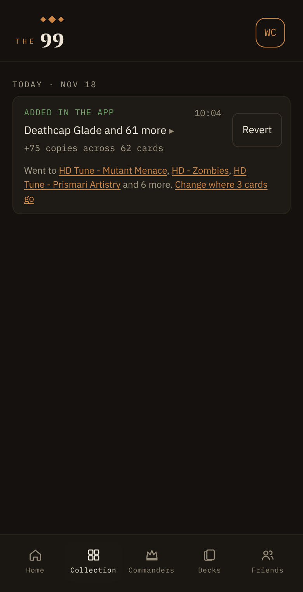
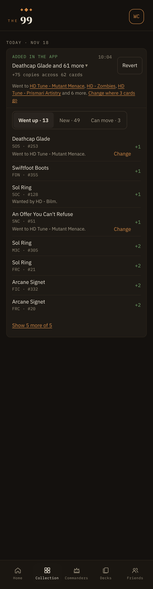
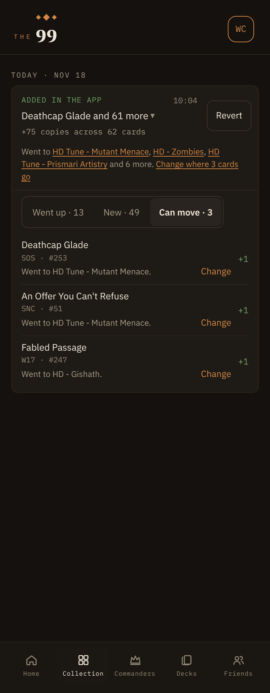
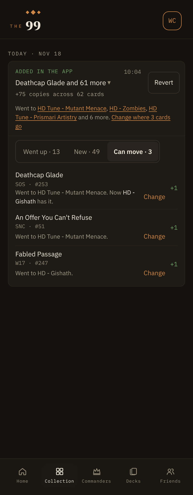
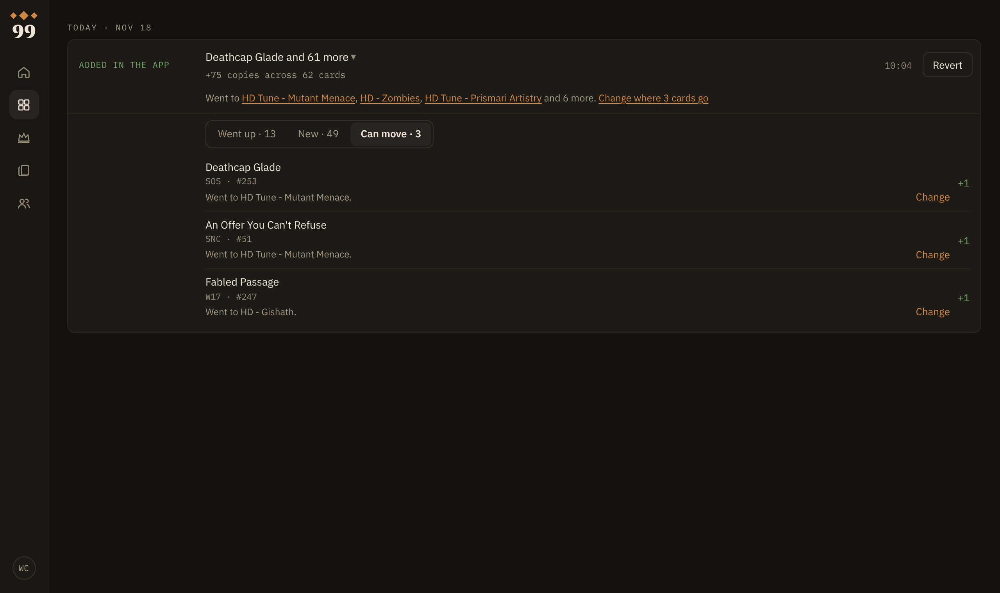

L · a large entry · 390 and 1280
Your live entry’s shape: Went up · 13, New · 49, the summary line naming three decks and 6 more. The shipped entry, groups and rows, with Change added per card.
L1 · closed

The summary line keeps its names and adds Change where 3 cards go. It opens the entry on Can move. No Change on this line: it names nine decks.
L2 · open, Went up

Each row whose card still has a choice ends its own line with Change: Deathcap Glade, An Offer You Can’t Refuse. Swiftfoot Boots and the spare Sol Rings have copies to spare, so they have none.
L3 · Can move · 3

A last tab after the shipped groups holds just the cards with a choice, from every group (Fabled Passage is from New). Each Change opens that card’s chooser.
L4 · after a move

The row keeps its record and adds Now HD - Gishath has it. It stays in Can move while it still has a choice.
L5 · desktop, Can move

The same entry at 1280: rows in the shipped column, Change at the end of each card’s line, under its count.